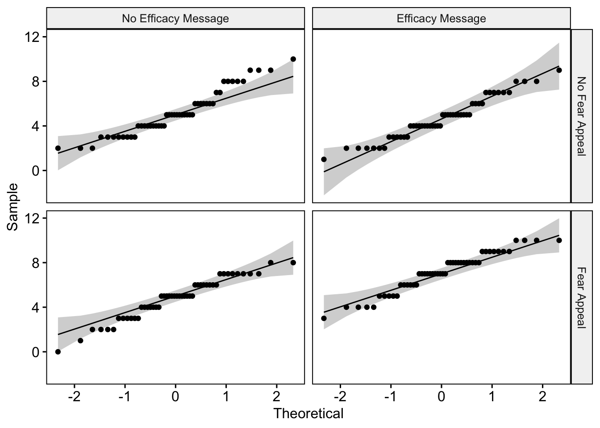
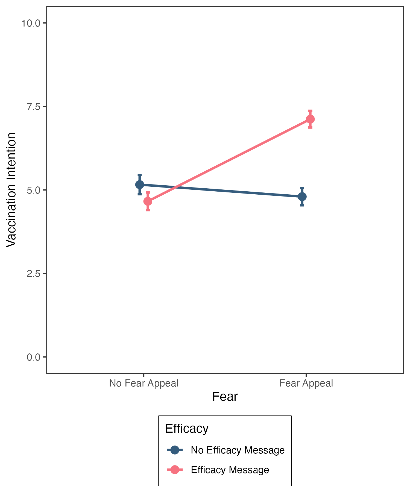

setwd("~/psyc214_lab_7")7. Two-Factor Between-Participants ANOVA
Mark Hurlstone, Richard Philpot
We must make the best of those things that are in our power, and take the rest as nature gives it. —Epictetus, Discourses, 1.1

Learning Objectives
In this week’s lecture, we demonstrated the steps involved in performing a two-factor between-participants ANOVA by hand using the simplest possible instance of such a design, namely a 2 \(\times\) 2 factorial design. We saw that the analysis entails between 1–2 stages. In the first stage, we perform the ANOVA to establish whether either of the two main effects or interaction is significant. If the interaction is not significant, then the analysis stops here. However, if there is a significant interaction, then we must proceed to a second stage and perform a simple main effects analysis to establish the nature of the significant interaction. In today’s lab session, we will demonstrate how to perform a 2 \(\times\) 2 between-participants factorial ANOVA in R, including the calculation of the simple main effects. We will also demonstrate how to write up the results of a factorial ANOVA.
Getting Started
To get started, we first need to log into the R Studio Server.
You can access Lancaster University’s RStudio Server at http://psy-rstudio.lancaster.ac.uk. At present, you will need to be on campus, or connected to the VPN to access this. If you do not yet have Eduroam (the university wifi) available on your personal device, please follow the instructions from the PSYC214 Announcement Page https://modules.lancaster.ac.uk/mod/forum/discuss.php?d=388256

If you are on Eduroam (or VPN if off campus) and have accessed the RStudio Server from the URL above, you will now see a login screen (see above). Please use your normal Lancaster University username (e.g., bloggsj). Your own individual RStudio Server password was sent in an email, prior to the first lab, by Kay Rawlins: email header ‘R Studio Server login details’. Please make sure you have this.
Once you are logged into the server, create a folder for today’s session. Navigate to the bottom right panel and under the Files option select the New Folder option. Name the new folder psyc214_lab_7. Please ensure that you spell this correctly otherwise when you set the directory using the command given below it will return an error.
Se we can save this session on the server, click File on the top ribbon and select New project. Next, select existing directory and name the working directory ~/psyc214_lab_7 before selecting create project.
Finally, open a script for executing today’s coding exercises. Navigate to the top left pane of RStudio, select File –> New File –> R Script. Working from a script will make it easier to edit your code and you will be able to save your work for a later date.

Let’s set our working directory:
Now that you have created a folder for today’s session, it’s time to add the Week 7 data file. Head on over to the PSYC214 Moodle page, access the lab folder for Week 7, and download the file COVID19Data.csv to your desktop. Next, in the RStudio Server open your new pscy214_lab_7 folder. When in the new folder, select the Upload tab. This will present a box that will ask where the data is that you want to upload. Click on Browse, find the COVID19Data.csv file on your desktop and click OK.
Before moving on, let’s load the relevant libraries that we will be using in today’s session.
library("tidyverse") # For data storage and manipulation
library("tidyr") # For tidy data
library("rstatix") # For descriptives statistics, outlier detection etc.
library("effectsize") # For generating effect sizes for the ANOVA and simple main effects
library("ggpubr") # For generating QQ plots
library("phia") # For calculating simple main effectsToday’s Lab Activities
Analysing the Hypothetical COVID-19 Vaccination Study Data
Today, we are going to analyse the hypothetical COVID-19 vaccination study data that we plotted in last week’s lab session. As a reminder, the table below summarises the four different conditions of our 2 \(\times\) 2 between-participant study.

The data set consists of the following four columns:
Par: represents the participant number, which ranges from 1–200, with \(N\) = 50 participants in each of the four conditions resulting from the combination of our two factors, described next.
Fear: represents whether the participant indicated by the row received (Fear Appeal) or did not receive (No Fear Appeal) the fear appeal.
Efficacy: represents whether the participant indicated by the row received (Efficacy Message) or did not receive (No Efficacy Message) the self-efficacy message.
Likelihood: represents the vaccination likelihood score of the participant indicated by the row.
The first thing you need to do is load the data into RStudio. Make sure that you name your data frame as covid19Data. Once you have done this, you need to re-level the factors Fear and Efficacy so that “No Fear Appeal” is the baseline level for the former factor, and “No Efficacy Message” is the baseline level for the latter factor. We showed you how to do this in the Week 6 lab session.
# *** ENTER YOUR OWN CODE HERE IMPORTING THE DATA AND RE-LEVELLING THE FACTORS ***Once you have done the above, type (covid19Data) into the console to view the first 10 rows of the data. We want to check that the columns for Fear and Efficacy have the labels <fct> beneath them. This means that R has stored these variables as factors, which is necessary for us to perform the ANOVA. By default, R will import these variables as characters, in which case the variables would have the labels <chr> beneath them. If that is the case for your data, then you will need to modify this before proceeding further.
# A tibble: 200 × 4
Par Fear Efficacy Likelihood
<dbl> <fct> <fct> <dbl>
1 1 No Fear Appeal No Efficacy Message 6
2 2 No Fear Appeal No Efficacy Message 4
3 3 No Fear Appeal No Efficacy Message 7
4 4 No Fear Appeal No Efficacy Message 8
5 5 No Fear Appeal No Efficacy Message 5
6 6 No Fear Appeal No Efficacy Message 6
7 7 No Fear Appeal No Efficacy Message 2
8 8 No Fear Appeal No Efficacy Message 6
9 9 No Fear Appeal No Efficacy Message 5
10 10 No Fear Appeal No Efficacy Message 3
# … with 190 more rowsDescriptives statistics and assumption checks
The next step is to generate some descriptive statistics. We want the means, standard deviations, and confidence intervals for our four conditions. You have done this before, so you can generate these descriptive statistics for yourselves. When you invoke the group_by() function, remember to include the variables for both factors, (Fear, Efficacy) with a comma seperating them, as I have done here. Make sure you name your descriptive statistics descriptives.
# *** ENTER YOUR OWN CODE FOR GENERATING THE DESCRIPTIVE STATISTICS ***Once you have written and executed the code in RStudio, type descriptives in the console to view the descriptive statistics, it should yield the following output:
Fear Efficacy variable n mean sd ci
1 No Fear Appeal No Efficacy Message Likelihood 50 5.16 2.024 0.575
2 No Fear Appeal Efficacy Message Likelihood 50 4.66 1.869 0.531
3 Fear Appeal No Efficacy Message Likelihood 50 4.80 1.829 0.520
4 Fear Appeal Efficacy Message Likelihood 50 7.12 1.769 0.503We won’t linger on these descriptive statistics because we inspected them in last week’s lab session.
The next steps are for us to perform our usual checks to make sure that the data are fit for analysis using ANOVA.
The first check we are going to perform is to establish whether there are any outliers or extreme values in the data set. Again, you have done this on numerous occasions before, so it is over to you to generate your own code to identify if there are any outliers or extreme values. As per when you generated the descriptive statistic, remember we have two factors, so when you invoke group_by() you will need to include the arguments (Fear, Efficacy).
# *** ENTER YOUR OWN CODE FOR CHECKING FOR OUTLIERS AND EXTREME VALUES ***If you have entered your code correctly, then it should generate the following:
# A tibble: 2 × 6
Fear Efficacy Par Likelihood is.outlier is.extreme
<fct> <fct> <dbl> <dbl> <lgl> <lgl>
1 No Fear Appeal No Efficacy Message 28 10 TRUE FALSE
2 Fear Appeal No Efficacy Message 126 0 TRUE FALSE There are only two outliers in the data, participant 28 who received the combination of No Fear Appeal/No Efficacy Message and participant 126 who received the combination of Fear Appeal/No Efficacy Message. Fortunately, there are no extreme values in the data, so we are safe to proceed without having to remove or transform any scores.
The next check that we need to undertake is to ensure that the homogeneity of variance assumption has been met. As we have seen in previous lectures and labs, this is an important assumption for single-factor between-participants ANOVA, and the same is true for between-participants factorial ANOVA. Applied to the latter, this assumption states that the variances of the different conditions created through the combination of factors should not differ systematically from one another. For our 2 \(\times\) 2 between-participants factorial design, this means that the variances for the four conditions created by the combination of our two factors should be roughly comparable.
We can test whether the data satisfy the homogeneity of variance assumption using Levene’s test, as we have done in previous lab classes. As you are familiar with the code for running Levene’s test, you can write this out for yourself. However, when you invoke Levene’s test using levene_test() you will need to enter (Likelihood ~ Fear * Efficacy) as the arguments. The argument Likelihood is our dependent measure, and the argument Fear * Efficacy tells the function that we want to run the test on the four conditions created through the combination of our two factors (that’s what the * is for; note you can also substitute the * with : which has the same meaning and yields the same result).
# *** ENTER YOUR OWN CODE FOR RUNNING LEVENE'S TEST ***If you have entered your code correctly, then it should return the following output:
# A tibble: 1 × 4
df1 df2 statistic p
<int> <int> <dbl> <dbl>
1 3 196 0.231 0.875The test result is nonsignificant (p = .875), which indicates that the variances of the four conditions do not differ appreciably from one another. Accordingly, based on Levene’s criterion, we can be satisfied that the homogeneity of variance assumption has been satisfied.
The next check we need to perform is to ensure that our data satisfy the normality assumption. We can do this by running a Shapiro Wilk test on the data for each of our four conditions to determine if the distribution of scores in each differs significantly from a normal distribution. Remember the rule for using this test—if there is less than \(N\) = 50 observations per condition, the Shapiro Wilk test is likely to yield an accurate test result, whereas if it is equal to or greater than this number, we are better off inspecting the QQ plots. Our sample size per condition is right on the threshold, so we will use both approaches to testing the normality assumption.
You have executed this test many times before, so once more it’s over to you to generate the code. Just remember once again that when invoking the function group_by you need to supply the arguments (Fear,Efficacy) given that we have two factors.
# *** ENTER YOUR OWN CODE FOR RUNNING THE SHAPIRO WILK TEST ***If you have executed your code correct, then you should see the following output:
# A tibble: 4 × 5
Fear Efficacy variable statistic p
<fct> <fct> <chr> <dbl> <dbl>
1 No Fear Appeal No Efficacy Message Likelihood 0.936 0.00971
2 No Fear Appeal Efficacy Message Likelihood 0.958 0.0752
3 Fear Appeal No Efficacy Message Likelihood 0.956 0.0587
4 Fear Appeal Efficacy Message Likelihood 0.949 0.0313 Two of the test results are nonsignificant, indicating that the distributions of scores in the No Fear Appeal/Efficacy Message condition and Fear Appeal/No Efficacy Message condition do not differ significantly from a normal distribution (p = .075 and \(p\) = .059, respectively). However, the other two test results are significant, indicating that the distributions of scores in the No Fear Appeal/No Efficacy Message condition and Fear Appeal/Efficacy Message condition do differ significantly from a normal distribution (p = .010 and \(p\) = .031, respectively).
Let’s not panic just yet. Remember, we are right on the threshold of accuracy for the Shapiro Wilk test, so we should take a look at the QQ plots before taking action.
I am going to assist with you with this next bit. We generate QQ plots (these have been described previously, most recently in the Week 5 lab session, so I won’t go into the details of what they plot and how to interpret them here again) using the ggqqplot() function. Previously, when you have used this function, you only had a single factor and you would have written something like this: ggqqplot(covid19Data, "Likelihood", facet.by = "Fear"), where Fear in this context is the one and only factor in the study. However, we have two factors in our study, so to get what we want we have to pass through our two factors to facet.by as a vector using c("Fear", "Efficacy"). The complete code is as follows:
# Specify covid19Data as the data; "Likelihood" as the dependent measure; and facet.by the "Fear" and "Efficacy" factors to create separate plots for the four different conditions.
ggqqplot(covid19Data, "Likelihood", facet.by = c("Fear", "Efficacy"))
The QQ plots look very reasonable. The only mildly concerning plot is in the top left-hand corner, which plots the distribution of scores for the No Fear Appeal/No Efficacy Message Condition. Several of the data points at the top end of the scale depart from the diagonal criterion line. I know from experience inspecting these plots that this is not a radical departure, so I’m happy to proceed without taking further action in this instance.
All in all, our data are looking in good shape, so we are ready to perform our ANOVA.
Running the ANOVA
To run our ANOVA, we are going to use the aov() function that Richard introduced you to (in your Week 2 lab session) that you used to run a single-factor between-participants ANOVA. We can also use this function to run a between-participants factorial ANOVA.
Let’s suppose, for a moment, that we only had a single factor in our study, Fear. To run the ANOVA we could use: covidModel = aov(data = covid19Data, Likelihood ~ Fear). Here we are asking R to run an ANOVA in which the data is covid19Data (the first argument), the dependent measure is Likelihood (the second argument), and the factor is Fear (the third argument), and we are storing the results in a variable called covidModel — the value to the left of the = sign. The ~ sign after Likelihood tells R that we have declared our dependent measure, and what follows after this symbol are the factors for the analysis.
How do we extend this to a two-factor study? Intuitively, you might think we would write something like this: covidModel = aov(data = covid19Data, Likelihood ~ Fear + Efficacy). Now, after the ~, we have added both factors in our study Fear + Efficacy seperated by a + sign. This is part of what we need, but not all that we need. What this code would do is generate the two main effects for Fear and Efficacy, but it would not test the interaction. To test the interaction, we need to modify the code following ~ as follows: Fear + Efficacy + Fear * Efficacy. The new bit + Fear * Efficacy tells R that we want to test the interaction as well (that’s what the * between the two factors indicates; we can also use : in place of * which has the same meaning).
The complete piece of code we need to run our ANOVA is as follows:
# Specify our ANOVA model (see the main text for details)
covidModel = aov(data = covid19Data, Likelihood ~ Fear + Efficacy + Fear * Efficacy)
# This bit prompts R to produce our summary ANOVA table
summary(covidModel) Df Sum Sq Mean Sq F value Pr(>F)
Fear 1 55.1 55.12 15.68 0.000105 ***
Efficacy 1 41.4 41.40 11.78 0.000732 ***
Fear:Efficacy 1 99.4 99.40 28.27 2.86e-07 ***
Residuals 196 689.2 3.52
---
Signif. codes: 0 '***' 0.001 '**' 0.01 '*' 0.05 '.' 0.1 ' ' 1Let’s take a look at the resulting ANOVA table. The first column corresponds to the source of the effect:
Fearcorresponds to the main effect of Fear.Efficacycorresponds to the main effect of Efficacy.Fear:Efficacycorresponds to the interaction between the two factors.Residualscorresponds to the error term used to test the above effects.
The second column gives us the degrees of freedom for each effect indicated by the row (DF), the third column gives us the Sum of Squares (Sum Sq), the fourth column gives us the Mean Square (Mean Sq), the fifth column gives us the F value (F value), and the final column gives us the p value associated with each effect (PR\(>\)F). Let’s run some sanity checks, starting with the Mean Square. These values should be equal to the Sum of Squares divided by the degrees of freedom for the effect indicated by the row, which they are (check for yourself). The F values should be equal to the Mean Square divided by the error term (3.52) for the effect indicated by the row, which they are once again (check for yourself).
We can see from the final column that both the main effects and the interaction are significant (all p < .001). To help quantify the size of these effects, let’s get some effect size estimates using the effectsize() function from the effectsize package that we have used previously:
effectsize(covidModel)# Effect Size for ANOVA (Type I)
Parameter | Eta2 (partial) | 95% CI
---------------------------------------------
Fear | 0.07 | [0.03, 1.00]
Efficacy | 0.06 | [0.02, 1.00]
Fear:Efficacy | 0.13 | [0.06, 1.00]
- One-sided CIs: upper bound fixed at [1.00].The \(\eta^2\) effect size estimates for the main effect of fear, efficacy, and the interaction are, .07, .06, and .13, respectively, corresponding to medium-, medium-, and large-sized effects (reminder: 0.01 = small effect; 0.06 = medium effect; 0.14 = large effect).
Because the two main effects only comprise two levels, these results are easy to interpret as they involve a straightfoward pairwise comparison. Looking at the descriptive statistics we requested earlier, we can see that vaccination likelihood scores are higher in the presence of a fear appeal than in the absence of a fear appeal — this is the significant main effect of fear. We can also see that vaccination likelihood scores are higher in the presence of a self-efficacy message than in the absence of a self-efficacy message — this is the significant main effect of efficacy.
The interaction is less straightforward to interpret. To identify the reason for the interaction between factors, we need to proceed to a second stage of analysis in which we test the simple main effects of each factor.
Generating the simple main effects
Remember that the simple main effects break down the main effects into their component parts. That is, we examine the effect of each factor at each level of the other factor. In a 2 \(\times\) 2 factorial design, each factor has two simple main effects.
We will start by looking at the two simple main effects of fear:
We want to know whether there is a significant effect of fear (no fear appeal \(vs.\) fear appeal) at the no efficacy message level of the efficacy factor.
We want to know whether there is a significant effect of fear (no fear appeal \(vs.\) fear appeal) at the efficacy message level of the efficacy factor.
We can test these simple main effects using the testInteractions() function in the phia package (phia stands for Post-Hoc Interaciton Analysis) using the following code:
# Get the simple main effects of "Fear" at each level of the "Efficacy" factor
smeFear = testInteractions(covidModel, fixed = "Efficacy", across = "Fear")
# Print the results
(smeFear)F Test:
P-value adjustment method: holm
Value Df Sum of Sq F Pr(>F)
No Efficacy Message 0.36 1 3.24 0.9214 0.3383
Efficacy Message -2.46 1 151.29 43.0238 9.398e-10 ***
Residuals 196 689.22
---
Signif. codes: 0 '***' 0.001 '**' 0.01 '*' 0.05 '.' 0.1 ' ' 1Let’s clarify what we have just requested in the above code. The first argument we supplied to the function was our ANOVA model, covidModel. Next we specified which simple main effects we wanted to test via two further arguments to the function. Specifically, fixed = "Efficacy tells the function that we want to fix (or hold constant) the level of the factor efficacy, and across = "Fear" tells the function that for each of these levels, we want to compare the difference between the no fear appeal and fear appeal levels of the fear factor. Notice that we have made a specific assignment to a variable called smeFear — the value before the = sign. The reason for that will become clear shortly.
Let’s look at the output that has been produced. It’s basically another ANOVA table with our two simple main effects (No Efficacy Message and Efficacy Message, respectively) and also the error term (Residuals) from the initial ANOVA (remember from the Week 7 lecture that we use the same error term from the initial ANOVA to test the simple main effects — notice that Sum of Squares for Residuals is 689.22, which is the same as in the ANOVA table for our initial analysis).
The first row, shows the simple main effect of fear at the no efficacy message level of the efficacy factor. This simple main effect is nonsignificant (p = .338). Thus, in the absence of a self-efficacy message, the likelihood of vaccinating is unaffected by whether or not a person is a given a fear appeal.
The secod row, shows the simple main effect of fear at the efficacy message level of the efficacy factor. This simple main effect is significant (p < .001). Looking at the descriptive statistics we generated earlier, we can see that this is because in the presence of a self-efficacy message vaccination likelihood scores are higher in the presence than in the absence of a fear appeal.
We can also request effect sizes for these simple main effects using the effectsize() function. This is why we saved our simple main effects to the variable smeFear. This allows us to get the effect sizes using the following bit of code:
effectsize(smeFear)# Effect Size for ANOVA (Type I)
Parameter | Eta2 (partial) | 95% CI
---------------------------------------------------
No Efficacy Message | 4.68e-03 | [0.00, 1.00]
Efficacy Message | 0.18 | [0.11, 1.00]
- One-sided CIs: upper bound fixed at [1.00].The effect size for the first simple main effect, which was nonsignificant, is nonsurprisingly very small (\(\eta^2\) = .00), whereas the effect size for the second simple main effect, which was significant, is large (\(\eta^2\) = .18).
Next, we want to look at the two simple main effects of efficacy:
We want to know whether there is a significant effect of efficacy (no efficacy message \(vs.\) efficacy message) at the no fear appeal level of the fear factor.
We want to know whether there is a significant effect of efficacy (no efficacy message \(vs.\) efficacy message) at the fear appeal level of the fear factor.
We can get these simple main effects using the following code:
# Get the simple main effects of "Efficacy" at each level of the "Fear" factor
smeEfficacy = testInteractions(covidModel, fixed = "Fear", across = "Efficacy")
(smeEfficacy)F Test:
P-value adjustment method: holm
Value Df Sum of Sq F Pr(>F)
No Fear Appeal 0.50 1 6.25 1.7774 0.184
Fear Appeal -2.32 1 134.56 38.2661 7.058e-09 ***
Residuals 196 689.22
---
Signif. codes: 0 '***' 0.001 '**' 0.01 '*' 0.05 '.' 0.1 ' ' 1This time, to generate the simple main effects of interest we set the second argument to fixed = "Fear which tells the function that we want to fix (or hold constant) the level of the factor fear, and we set the value of the third argument to across = "Fear" which tells the function that for each of those levels, we want to compare the difference between the no efficacy message and efficacy message levels of the efficacy factor. Notice that we have once again made a specific assignment to a variable called smeEfficacy — the value before the = sign, so we can get effect sizes for these simple main effects later.
Let’s once again look at the output that has been produced.
The first row, shows the simple main effect of efficacy at the no fear appeal level of the fear factor. This simple main effect is nonsignificant (p = .184). Thus, in the absence of a fear appeal, the likelihood of vaccinating is unaffected by whether or not a person is given a self-efficacy message.
The secod row, shows the simple main effect of efficacy at the fear appeal level of the fear factor. This simple main effect is significant (p < .001). Looking at the descriptive statistics we generated earlier, we can see that this is because in the presence of a fear appeal vaccination likelihood scores are higher in the presence than in the absence of a self-efficacy message.
We can get the effect sizes of these simple main effects as follows:
effectsize(smeEfficacy)# Effect Size for ANOVA (Type I)
Parameter | Eta2 (partial) | 95% CI
----------------------------------------------
No Fear Appeal | 8.99e-03 | [0.00, 1.00]
Fear Appeal | 0.16 | [0.09, 1.00]
- One-sided CIs: upper bound fixed at [1.00].The effect size for the first simple main effect, which was nonsignificant, is nonsurprisingly very small (\(\eta^2\) = .01), whereas the effect size for the second simple main effect, which was significant, is large (\(\eta^2\) = .16).
How to write up the results

Figure 1 shows vaccination likelihood scores as a function of the fear and efficacy manipulations. These data were subjected to a 2 (fear: no fear appeal \(vs.\) fear appeal) \(\times\) 2 (efficacy: no efficacy message \(vs.\) efficacy message) between-participants Analysis of Variance. There was a significant main effect of fear, F(1, 196) = 15.68, p < .001, \(\eta^2\) = .07, with vaccination likelihood scores being higher in the presence than in the absence of a fear appeal, a significant main effect of efficacy, F(1, 196) = 11.78, p < .001, \(\eta^2\) = .06, with vaccination likelihood scores being higher in the presence than in the absence of a self-efficacy message, and a significant interaction between the two factors, F(1, 196) = 28.27, p < .001, \(\eta^2\) = .13.
To scrutinise the interaction, a simple main effects analysis was undertaken. In the absence of an efficacy message, there was no significant effect of fear, F(1, 196) = .92, p = .338, \(\eta^2\) = .00, whereas in the presence of an efficacy message there was a significant effect of fear, F(1, 196) = 43.02, p < .001, \(\eta^2\) = .18, with vaccination likelihood scores being higher in the presence than in the absence of a fear appeal. Mirroring these results, in the absence of a fear appeal, there was no significant effect of efficacy, F(1, 196) = 1.78, p = .184, \(\eta^2\) = .01, whereas in the presence of a fear appeal there was a significant effect of efficacy, F(1, 196) = 38.27, p < .001, \(\eta^2\) = .16, with vaccination likelihood scores being higher in the presence than in the absence of an efficacy message.
Hence, people receiving a fear appeal had a higher likelihood of vaccinating against COVID-19 than those that did not receive a fear appeal, but only when the fear appeal was combined with a self-efficacy enhancing message.
Additional tasks
The final task is for you to generate the line graph of the data shown in Figure 1 above. This was generated using the code we supplied in last week’s lab session. However, we are now using confidence intervals for the error bars, so you will need to modify this aspect of the code.
# *** ENTER YOUR OWN CODE FOR GENERTING THE LINE GRAPH IN FIGURE 1 ***Warning: Using `size` aesthetic for lines was deprecated in ggplot2 3.4.0.
ℹ Please use `linewidth` instead.Final remarks
In this lab session, we have analysed the simplest instance of a two-factor between-participants design—namely a 2 \(\times\) 2 design. But what happens if one or both of the factors have more than two levels? In this case, the analysis is a bit more involved. If the main effect of a factor with three or more levels is significant, then we will need to perform follow-up tests (planned comparisons or post-hoc tests), just like we did for a one-factor between-participants ANOVA to interpret the significant main effect. Another implication is that, if the interaction is significant, the simple main effects for any factor with three or more levels will require follow-up tests. Suppose we have a 2 (factor A: Level A\(_{1}\) vs. Level A\(_{2}\)) \(\times\) 3 (factor B: Level B\(_{1}\) vs. Level B\(_{2}\) vs. Level B\(_{3}\)) between participants factorial design. The three simple main effects of factor A will involve only pairwise comparisons (namely A\(_{1}\) vs. A\(_{2}\), at levels B\(_{1}\), B\(_{2}\), and B\(_{3}\)). However, the two simple main effects of factor B will encompass comparisons between three levels (namely B\(_{1}\) vs. B\(_{2}\) vs B\(_{3}\) at levels A\(_{1}\) and A\(_{2}\)). These latter simple main effects are like running one-factor ANOVA’s on factors with three levels—if the test result is significant, it only tells us that the means differ, but we need to perform follow-up tests to identify the location of those differences. We will consider this issue in more detail in the next lecture and lab class.
For now, well done! We’ll see you again next week.
FYI: at the end of the week I will upload a version of these lab materials to the lab folder that contains the full working code for the analyses.